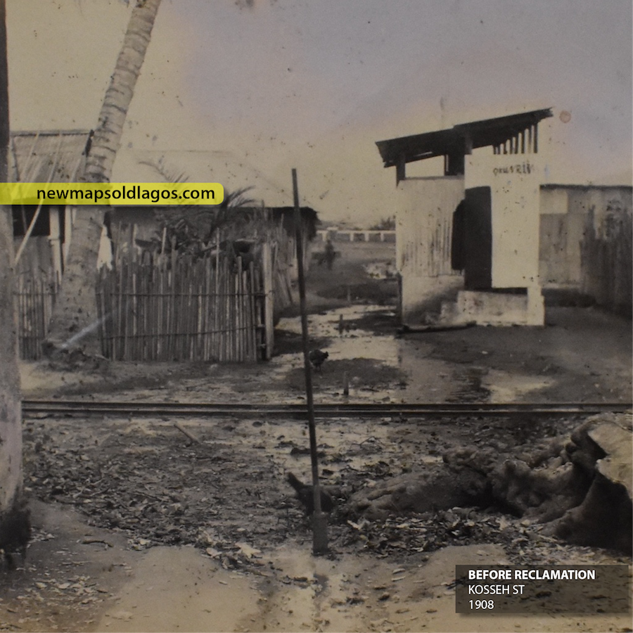
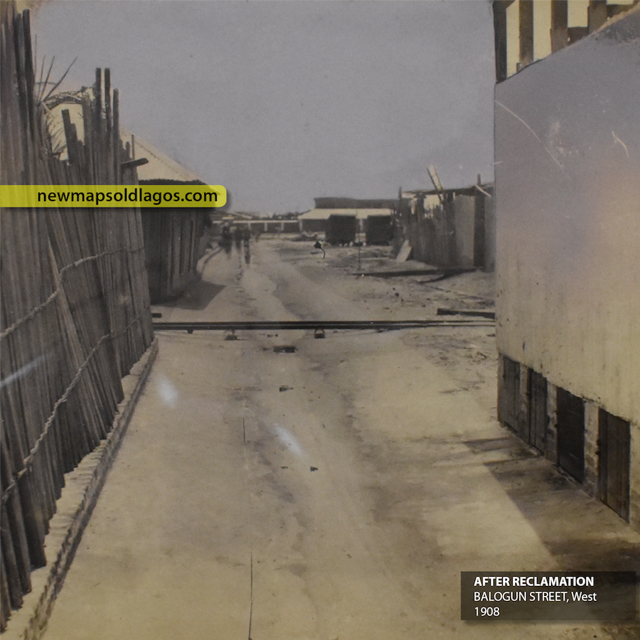
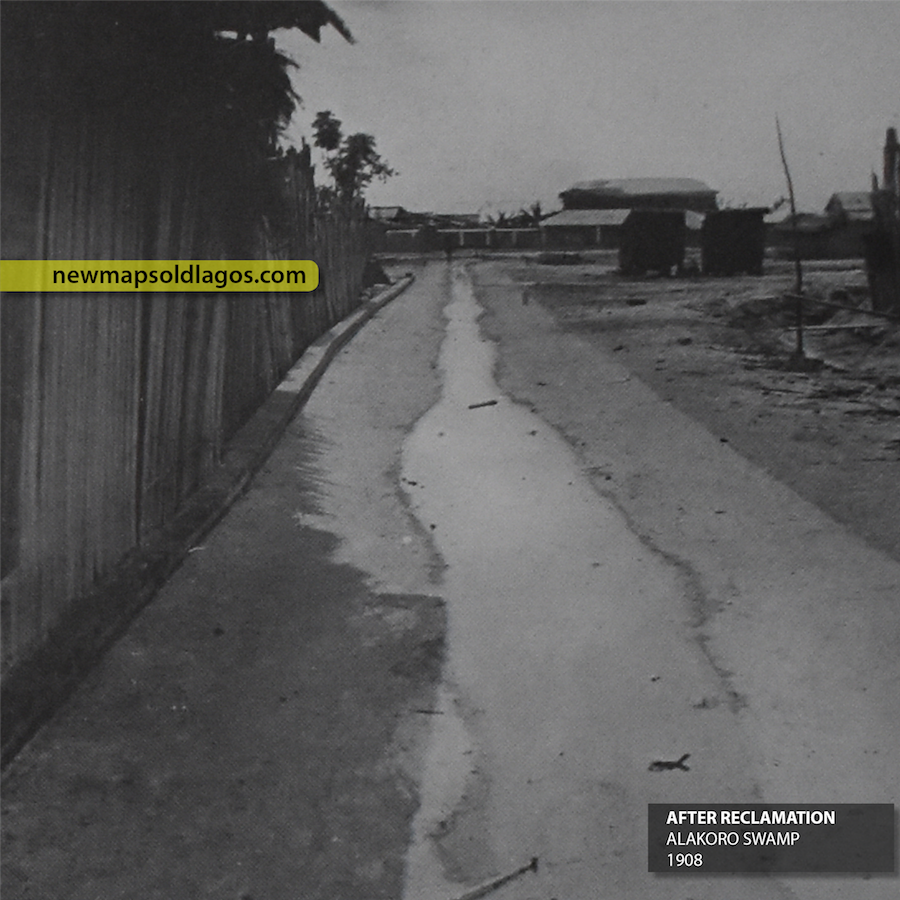

The Old Shore
There is a unique history buried beneath the edges of city.
Elegbata Creek

There were small swamps all over the island, such as along the Marina and in the Kokomaiko area. Filling Elegbata Creek was the first major intervention, and work on this project began in 1886. Alakoro was filled and drained by 1908, and this led to the reconstruction of Kosseh and Balogun streets.
Isalegangan & Idumagbo

Isalegangan and Idumagbo were the largest lagoons in Lagos Island, and for many years were the center of complaints from local residents. In 1929, the new Lagos Executive Development Board took on the work of draining swamps. By 1936, both of these lagoons were filled. But what was their significance for local residents?
Alakoro
Island or Swamp?
The areas around Alakoro, and by extension Ẹlẹgbata, were low lying and prone to flooding after heavy rains. This post looks at the before and after of the efforts to rid this part of Lagos of the mosquito larvae that settled in the swamps. Though it worked and made the areas healthier, it erased two important natural landmarks.

There were reports that John Glover had planned to cut canals through the connect Alakoro, Ẹlẹgbata and Oke Arin swamps. These swamps were considered by many to be an eyesore in the region, and complicated the sanitary conditions in the areas. Lagosians had been petitioning for the colonial government to fill in the swamp since at least 1884.
An 1888 Sanitary Report of the colony noted that the swamps at Alakoro were among the “greatest nuisances in the town, and being situated in the most most crowded districts, must have a deleterious effect on the health of the residents.
This process changed a number of old streets including Balogun and Kosseh streets, transforming them completely. Scroll down for images of before and after shots below. In some cases, new streets were created, eg connecting Customs to Carter Bridge. These swamps were also breeding grounds for mosquito larvae. Heavy rains in Lagos often lead to the shallow pools and ditches, filled with larvae. The leveling and grading of Alakoro helped rid this part of the island of its persistent mosquito problem. Together, nearly 17 1/2 acres of swamp was reclaimed at Alakoro and Ẹlẹgbata.
Before and After Photos
BEFORES: Shots of Balogun and Kosseh St and the swamp before the reclamation.
Balogun St, west

Alakoro Swamp

Kosseh St
AFTERS: Shots of Balogun and Kosseh St and the swamp, after the reclamation
Balogun St, west
Alakoro Swamp
Kosseh St